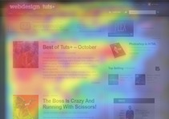

LAYOUT
F LAYOUT:
Today we're going to examine the "F Pattern Layout". Rather than trying to force the viewer's visual flow, the F-Layout gives in to the natural behaviors of most web surfers and it uses scientific studies to back it up. This tutorial will walk you through the principles of the F-Layout, why it works, and how you can create your own.
INTRODUCING THE F-LAYOUT
The F-Layout relies upon various eye tracking studies for it is foundational concept. These scientific studies show that web surfers read the screen in an "F" pattern - seeing the top, upper left corner and left sides of the screen most... only occasionally taking glances towards the right side of the screen. These eye tracking studies argue in favor of placing the most important elements of your site (branding, navigation, call to action) on the left side of the design. Let's take a peek at a heatmap using Web design tuts+ as the example:
This heatmap shows the abstract F shape that user's general gravitate towards. Hot spots (red/orange/yellow) represent where user's attention lingers the longest. Here is the general behavior pattern:
• Visitors start at the top left of the page.
• Then they scan the top of the site (navigation, subscription, search, etc.)
• Next they move down, reading the next full row of content... all the way to the sidebar.
• Last, surfers enter a "scanning pattern" once they hit the bulk of the site content.
Let's take a moment to turn this pattern into a barebones wireframe:Reading is largely done the same way that a book is read: top to bottom, left to right; Sidebar content is often dismissed below the "fold", and usually is only scanned briefly. The bulk of the attention stays within the main content column where, in this case, the article listing is located. A close inspection reveals a visual hierarchy that you might logically expect:
•The brand-mark and navigation occupy the visitor's attention first and foremost.
•Within the contest structure, images receive the greatest level of attention.
•Headlines come next.
•Text appears to be scanned, not read thoroughly.